東・南・北・中央・西・附属｜2学期 期末テスト
学校・学年ごとに、
※ 公式LINEの
学校を
▼ あなたの学校は？
松山東高校2学期 期末テスト対策
全授業90分
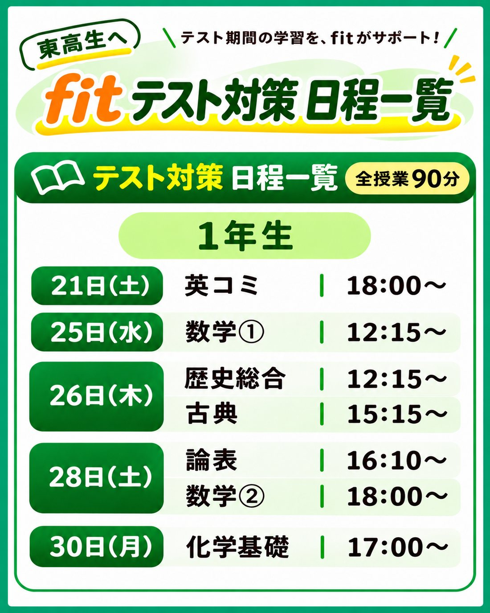
| 日付 | 時間 | 科目 |
|---|---|---|
| 11/21（土） | 18:00〜 | 英コミ |
| 11/25（水） | 12:15〜 | 数学① |
| 11/26（木） | 12:15〜 | 歴史総合 |
| 11/26（木） | 15:15〜 | 古典 |
| 11/28（土） | 16:10〜 | 論表 |
| 11/28（土） | 18:00〜 | 数学② |
| 11/30（月） | 17:00〜 | 化学基礎 |
灰色は、終わった日程です。
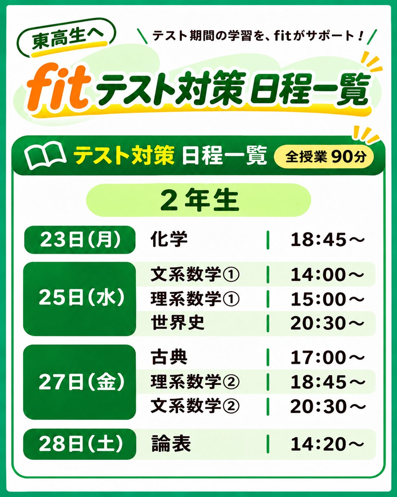
| 日付 | 時間 | 科目 |
|---|---|---|
| 11/23（月・祝） | 18:45〜 | 化学 |
| 11/25（水） | 14:00〜 | 文系数学① |
| 11/25（水） | 15:00〜 | 理系数学① |
| 11/25（水） | 20:30〜 | 世界史 |
| 11/27（金） | 17:00〜 | 古典 |
| 11/27（金） | 18:45〜 | 理系数学② |
| 11/27（金） | 20:30〜 | 文系数学② |
| 11/28（土） | 14:20〜 | 論表 |
灰色は、終わった日程です。
松山南高校2学期 期末テスト対策
教科書・ワークを持ってきてください
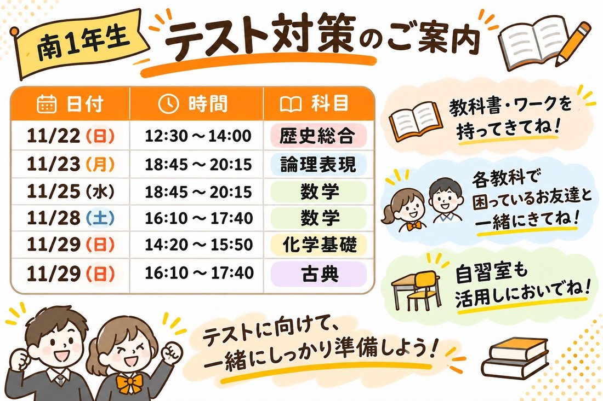
| 日付 | 時間 | 科目 |
|---|---|---|
| 11/22（日） | 12:30〜14:00 | 歴史総合 |
| 11/23（月・祝） | 18:45〜20:15 | 論理表現 |
| 11/25（水） | 18:45〜20:15 | 数学 |
| 11/28（土） | 16:10〜17:40 | 数学 |
| 11/29（日） | 14:20〜15:50 | 化学基礎 |
| 11/29（日） | 16:10〜17:40 | 古典 |
灰色は、終わった日程です。
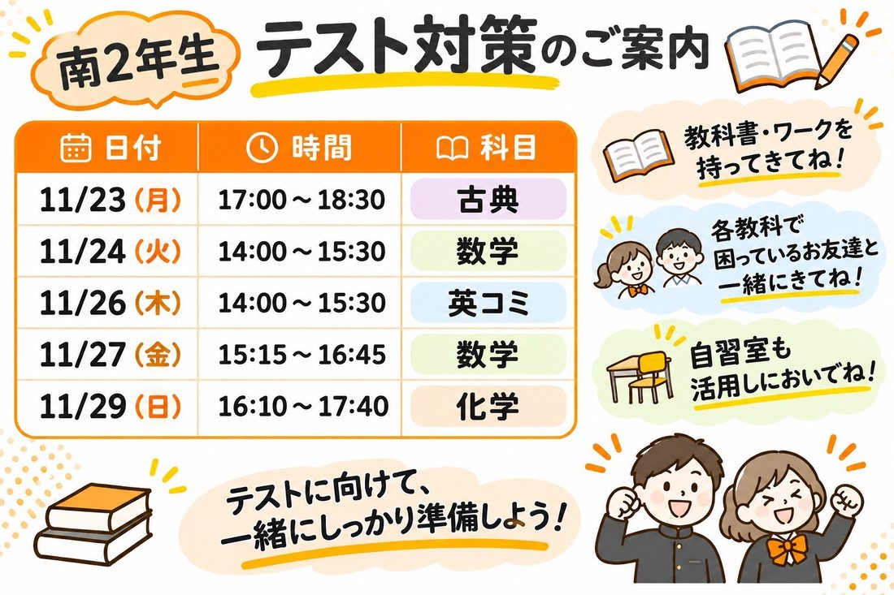
| 日付 | 時間 | 科目 |
|---|---|---|
| 11/23（月・祝） | 17:00〜18:30 | 古典 |
| 11/24（火） | 14:00〜15:30 | 数学 |
| 11/26（木） | 14:00〜15:30 | 英コミ |
| 11/27（金） | 15:15〜16:45 | 数学 |
| 11/29（日） | 16:10〜17:40 | 化学 |
灰色は、終わった日程です。
松山北高校2学期 期末テスト対策
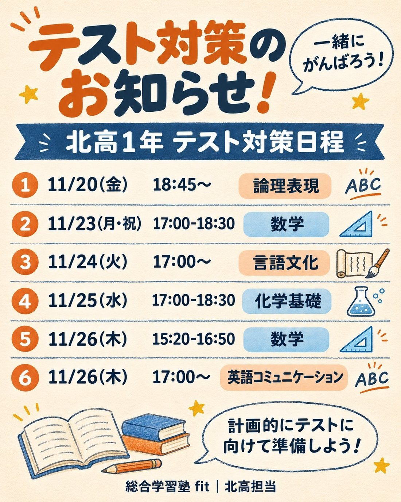
| 日付 | 時間 | 科目 |
|---|---|---|
| 11/20（金） | 18:45〜 | 論理表現 |
| 11/23（月・祝） | 17:00〜18:30 | 数学 |
| 11/24（火） | 17:00〜 | 言語文化 |
| 11/25（水） | 17:00〜18:30 | 化学基礎 |
| 11/26（木） | 15:20〜16:50 | 数学 |
| 11/26（木） | 17:00〜 | 英語コミュニケーション |
灰色は、終わった日程です。
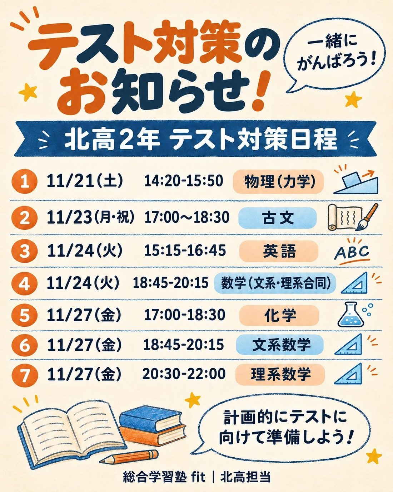
| 日付 | 時間 | 科目 |
|---|---|---|
| 11/21（土） | 14:20〜15:50 | 物理（力学） |
| 11/23（月・祝） | 17:00〜18:30 | 古文 |
| 11/24（火） | 15:15〜16:45 | 英語 |
| 11/24（火） | 18:45〜20:15 | 数学（文系・理系合同） |
| 11/27（金） | 17:00〜18:30 | 化学 |
| 11/27（金） | 18:45〜20:15 | 文系数学 |
| 11/27（金） | 20:30〜22:00 | 理系数学 |
灰色は、終わった日程です。
松山中央高校2学期 期末テスト対策
2年生は、希望があればテスト対策の追加もあります
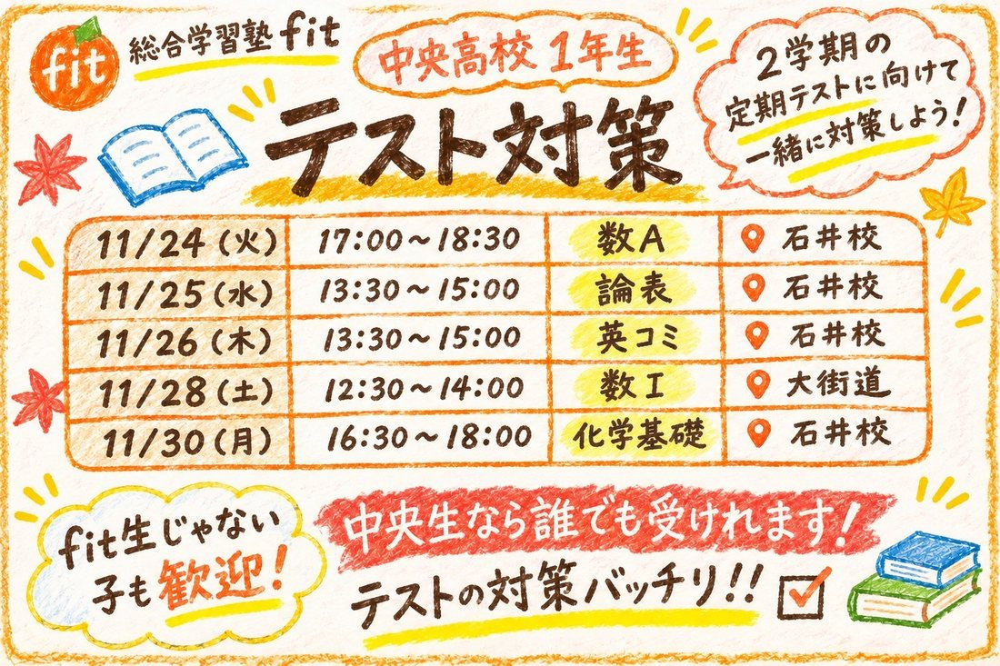
| 日付 | 時間 | 科目 | 教室 |
|---|---|---|---|
| 11/24（火） | 17:00〜18:30 | 数A | 石井校 |
| 11/25（水） | 13:30〜15:00 | 論表 | 石井校 |
| 11/26（木） | 13:30〜15:00 | 英コミ | 石井校 |
| 11/28（土） | 12:30〜14:00 | 数Ⅰ | 大街道 |
| 11/30（月） | 16:30〜18:00 | 化学基礎 | 石井校 |
灰色は、終わった日程です。
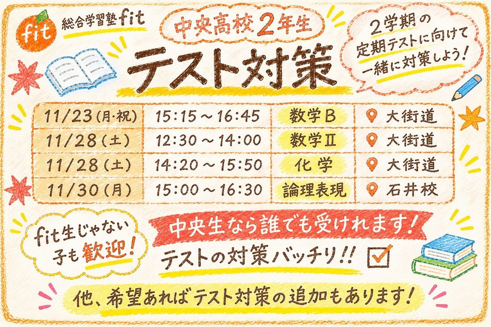
| 日付 | 時間 | 科目 | 教室 |
|---|---|---|---|
| 11/23（月・祝） | 15:15〜16:45 | 数学B | 大街道 |
| 11/28（土） | 12:30〜14:00 | 数学Ⅱ | 大街道 |
| 11/28（土） | 14:20〜15:50 | 化学 | 大街道 |
| 11/30（月） | 15:00〜16:30 | 論理表現 | 石井校 |
灰色は、終わった日程です。
松山西中等教育学校2学期 期末テスト対策
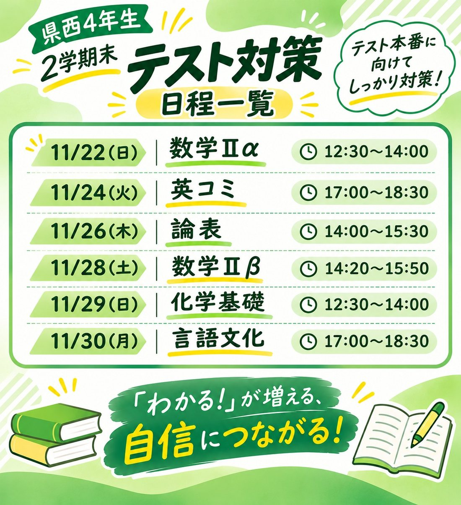
| 日付 | 時間 | 科目 |
|---|---|---|
| 11/22（日） | 12:30〜14:00 | 数学Ⅱα |
| 11/24（火） | 17:00〜18:30 | 英コミ |
| 11/26（木） | 14:00〜15:30 | 論表 |
| 11/28（土） | 14:20〜15:50 | 数学Ⅱβ |
| 11/29（日） | 12:30〜14:00 | 化学基礎 |
| 11/30（月） | 17:00〜18:30 | 言語文化 |
灰色は、終わった日程です。
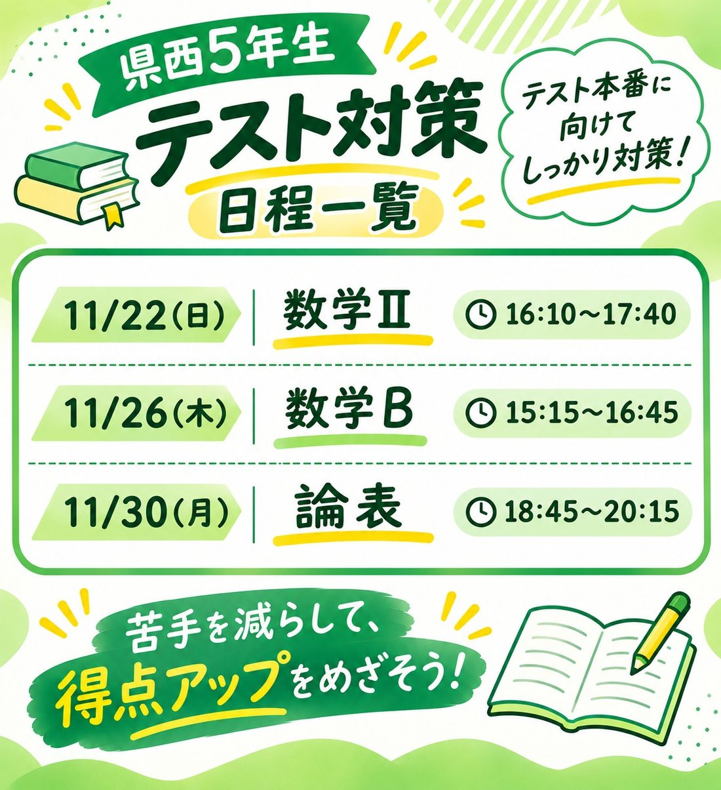
| 日付 | 時間 | 科目 |
|---|---|---|
| 11/22（日） | 16:10〜17:40 | 数学Ⅱ |
| 11/26（木） | 15:15〜16:45 | 数学B |
| 11/30（月） | 18:45〜20:15 | 論表 |
灰色は、終わった日程です。
愛媛大学附属高校2学期 期末テスト対策
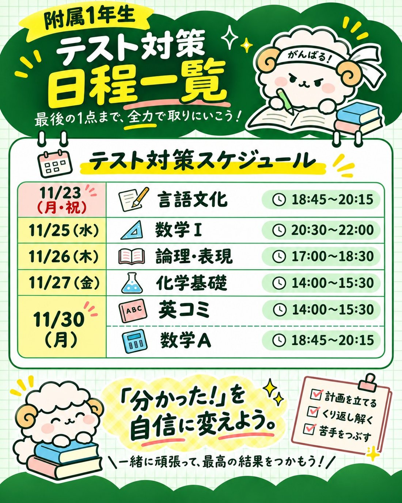
| 日付 | 時間 | 科目 |
|---|---|---|
| 11/23（月・祝） | 18:45〜20:15 | 言語文化 |
| 11/25（水） | 20:30〜22:00 | 数学Ⅰ |
| 11/26（木） | 17:00〜18:30 | 論理・表現 |
| 11/27（金） | 14:00〜15:30 | 化学基礎 |
| 11/30（月） | 14:00〜15:30 | 英コミ |
| 11/30（月） | 18:45〜20:15 | 数学A |
灰色は、終わった日程です。
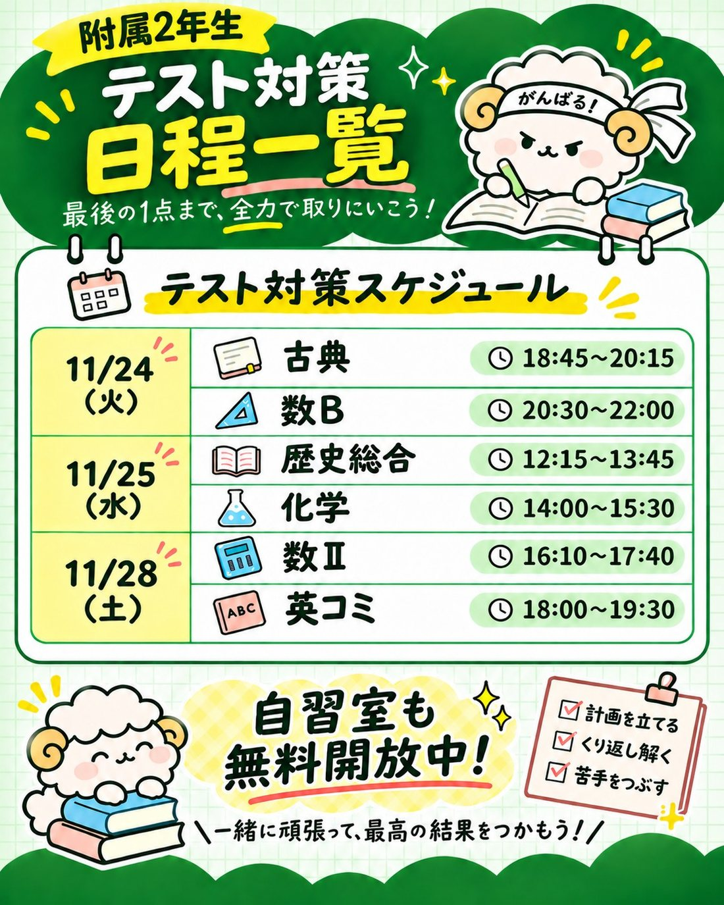
| 日付 | 時間 | 科目 |
|---|---|---|
| 11/24（火） | 18:45〜20:15 | 古典 |
| 11/24（火） | 20:30〜22:00 | 数B |
| 11/25（水） | 12:15〜13:45 | 歴史総合 |
| 11/25（水） | 14:00〜15:30 | 化学 |
| 11/28（土） | 16:10〜17:40 | 数Ⅱ |
| 11/28（土） | 18:00〜19:30 | 英コミ |
灰色は、終わった日程です。
テスト前、
どこで勉強してる？
こんな
家だと…
机に
学校だと…
友だちと
外の自習室だと…
行ってはいる
それなら、
時間を
授業と
周りも
同じように
わからない
自習室には
テスト前に
f i t の
8:00〜22:00｜土日祝も開いています｜f i t に
公式LINEで
公式LINEを
「参加予約はこちら」の
学校・学年・
例：「北高1年 ○○です。
当日、
学校の
「何から
テスト前の